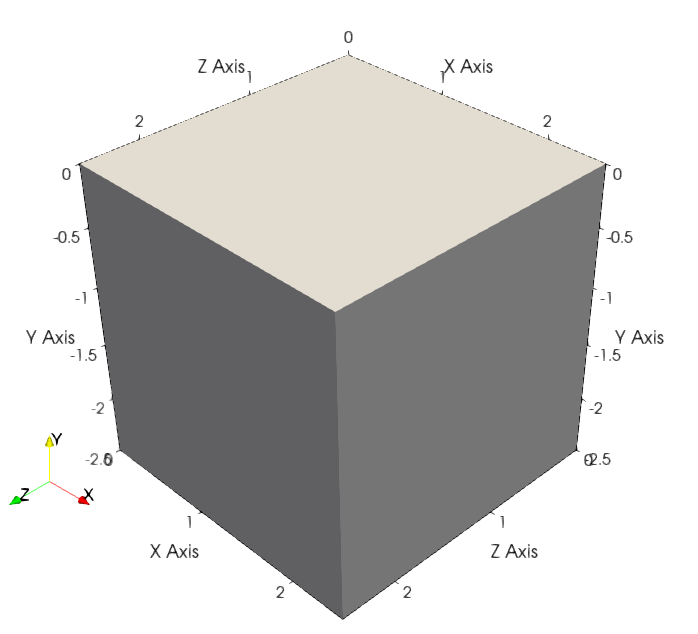

Initial conditions
Contains the classes to define the initial conditions such as the geometry of the physical domain, the mesh refinement or an initial field with a gaussian distribution. It generates symbolic expressions of the coordinates and initial field distribution.
Domain
In pTatin3d, the physical domain where the simulation is performed is defined by the coordinate system showed in the figure below.
{kind=link}

The following code describes the physical domain. While most of the usage of this class is for 3 dimensional domains, it can also be used for 2 dimensional and 1 dimensional domains.
Eulerian Domain (with free-surface)
ALE Domain
In case an ALE simulation is performed, the domain can be defined as a moving domain.
Therefore, its minumum and maximum coordinates will change in time and expressions relying
on the size of the domain need to consider this.
To do so, the following class introduce symbolic representation of the domain with the symbols
"Ox", "Oy", "Oz" for the origin of the domain and "Lx", "Ly", "Lz" for the size of the domain.
Mesh refinement
This module contains the class describing the mesh refinement.
Rotation
This module contains the class to perform rotations of single vectors, vector fields and referential in 2D and 3D.
Gaussian
This module contains the class to evaluate gaussian distributions of a field in 2D. It is generally used to define the initial strain distribution to place weak zones in the domain.
Plastic strain
This module contains the class to generate options for the initial plastic strain.
Heat source
This module contains the class to generate options for the initial heat source when set to
genepy.EnergySourceMaterialPointValue.
ICs pTatin3d options generation
This module contains the class to generate the options for the initial conditions of a 3D model running GENE3D in pTatin3d.